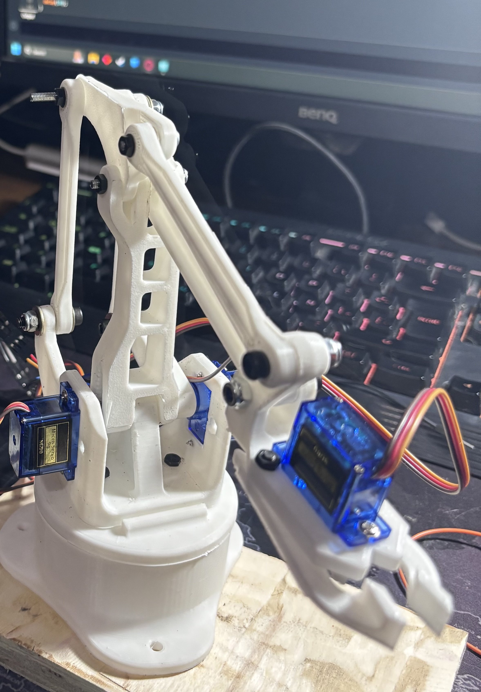

Este proyecto implementa un brazo robótico de cuatro grados de libertad (4DOF) controlado de forma remota mediante Bluetooth. El uso de un módulo Bluetooth 5 proporciona mayor alcance, baja latencia y menor consumo energético.
El brazo robótico se opera desde una aplicación móvil personalizada, enviando comandos para ejecutar movimientos específicos en cada servomotor.
- Introducción -
Los brazos robóticos son herramientas versátiles y esenciales en la automatización moderna. La posibilidad de controlarlos de forma inalámbrica abre nuevas aplicaciones, desde educación hasta uso industrial. Este proyecto utiliza Arduino como controlador principal y un módulo Bluetooth para recibir instrucciones en tiempo real desde un dispositivo móvil.
**Características clave del Bluetooth 5 en este proyecto:**
Alcance extendido (hasta 40 metros en interiores).
Velocidad mejorada para transmisión rápida de comandos.
Compatibilidad con dispositivos modernos.
- Materiales -
Arduino UNO (o equivalente).
Módulo Bluetooth HC-05 o HM-10 (Bluetooth 5 recomendado).
4 Servomotores SG90 o MG90S (para movimientos precisos).
Protoboard y cables de conexión.
Fuente de alimentación externa para servomotores (batería LiPo 7.4V).
Impresora 3D para fabricar las piezas del brazo.
Dispositivo móvil con aplicación de control Bluetooth (como **"Bluetooth Terminal"** o una app personalizada).
- Desarrollo -
El brazo robótico se construye utilizando piezas impresas en 3D y servomotores para cada grado de libertad. Arduino controla cada servomotor basándose en los comandos recibidos a través de Bluetooth.

Pasos:
Diseño 3D: Crear las piezas del brazo en un software CAD como SolidWorks y fabricarlas con una impresora 3D.
Cableado: Conectar los servomotores a los pines PWM del Arduino y alimentar con una fuente externa.
Configuración Bluetooth: Configurar el módulo HC-05 para emparejarse con el dispositivo móvil y establecer una tasa de baudios de 9600 bps.
Programación Arduino: Utilizar la biblioteca Servo.h para controlar los movimientos de los servomotores según los comandos Bluetooth recibidos.
- Código Fuente -
El siguiente código interpreta comandos Bluetooth para controlar los servomotores:
Este proyecto demuestra cómo integrar tecnologías modernas como Bluetooth 5 con sistemas de robótica básicos para crear un brazo robótico controlado de forma remota. Se logra una comunicación eficiente con un diseño compacto y modular.
Las mejoras futuras incluyen agregar retroalimentación por sensores y un control más intuitivo mediante interfaces gráficas.